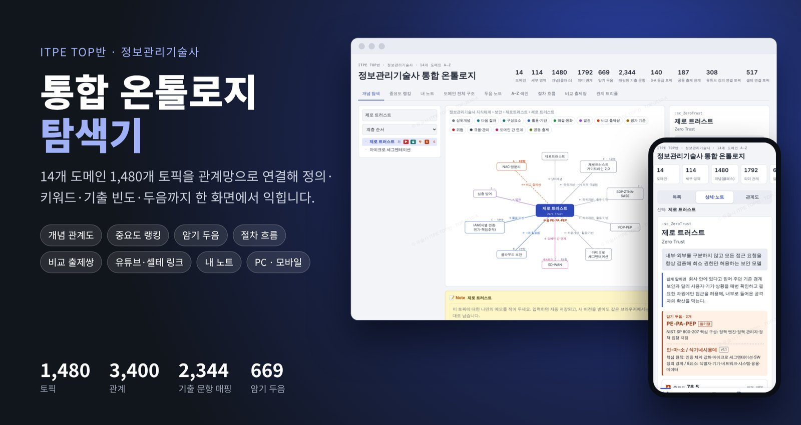
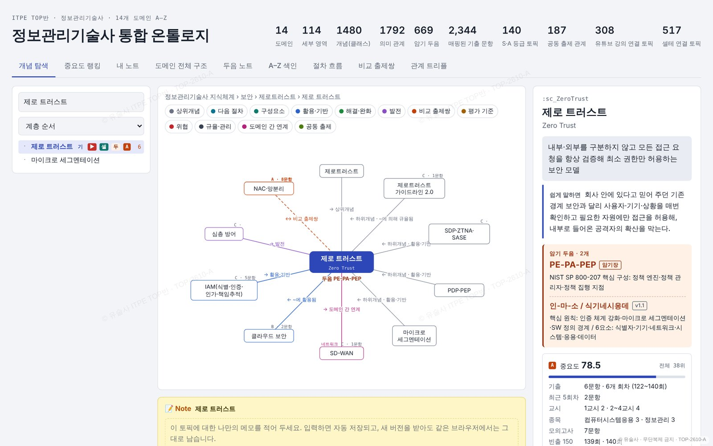
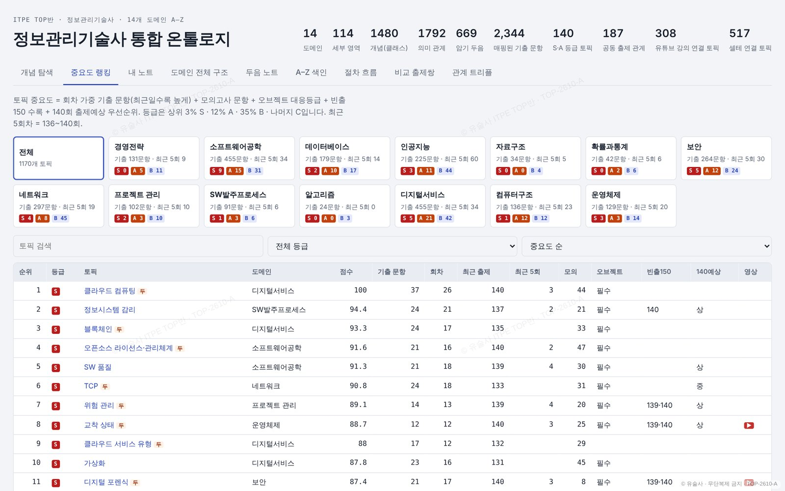
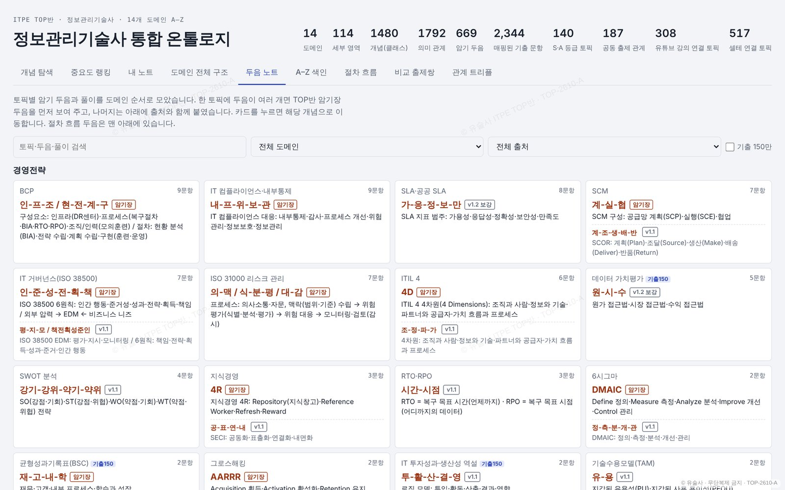
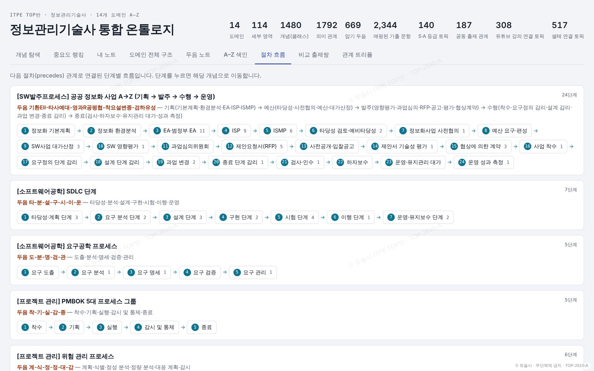
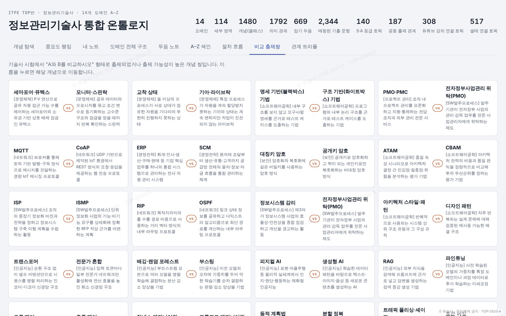
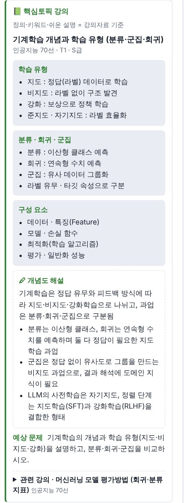
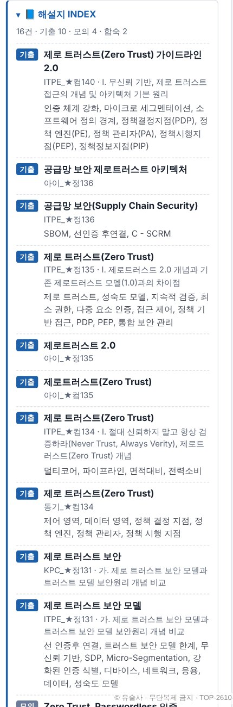
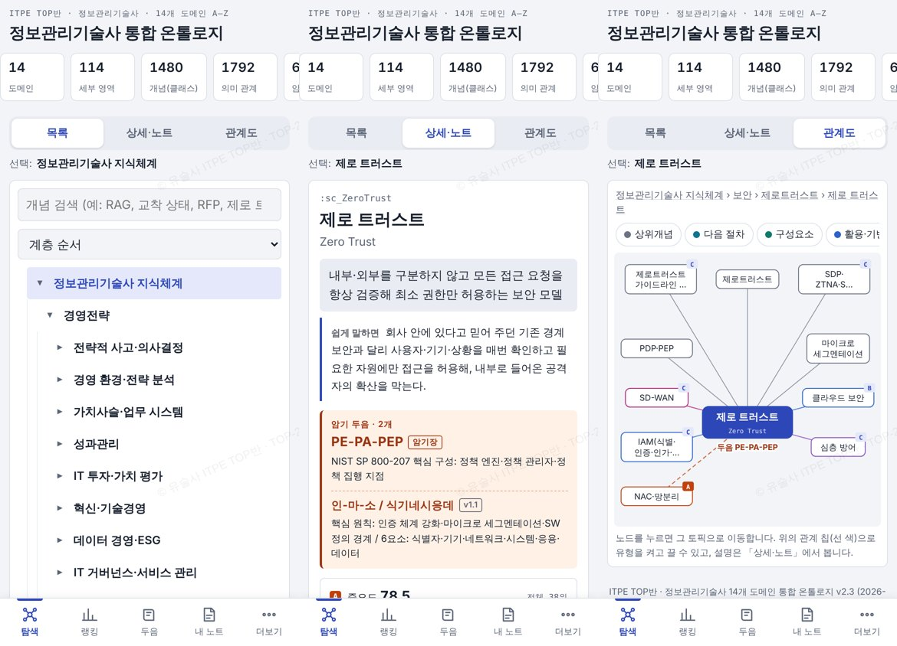

ITPE TOP반 · 정보관리기술사
ITPE 통합 온톨로지 탐색기
14개 도메인 1,438개 토픽의 정의·핵심키워드·쉬운 설명, 기출 빈도와 중요도, 암기 두음, 유튜브·참고 셀테 링크, 핵심토픽 강의자료, 해설지 3,030건 INDEX를 관계망으로 탐색합니다.

14도메인
1,438토픽
3,368관계
v2.62026-10-31
주요 화면

개념 탐색관계도와 정의·쉬운 설명·두음·기출 이력 카드

중요도 랭킹기출·모의·빈출150·출제예상 합산 S/A/B/C 등급

두음 노트668개 암기 두음을 도메인별로

절차 흐름단계형 토픽을 번호 흐름과 두음으로

비교 출제쌍자주 비교 출제되는 토픽 짝

핵심토픽 강의도메인별 강의자료 본문·개념도 해설

해설지 INDEX기출·모의·합숙 해설지 3,030건을 토픽별로

모바일목록·상세·관계도 3단 전환
데이터 내려받기 (JSON)
- itpe_selte_links.json — 참고 셀테 링크 팩 탐색기 「내 노트 → 가져오기」로 불러오면 토픽별 셀테 링크가 추가됩니다.
- itpe_ontology.json — 온톨로지 전체 데이터 토픽·관계·정의·키워드·설명·두음·중요도 (v2.6)
문의
- 카카오톡 오픈채팅 문의open.kakao.com/o/sA96qMog
- 전화 문의공일공-5862-팔사육구